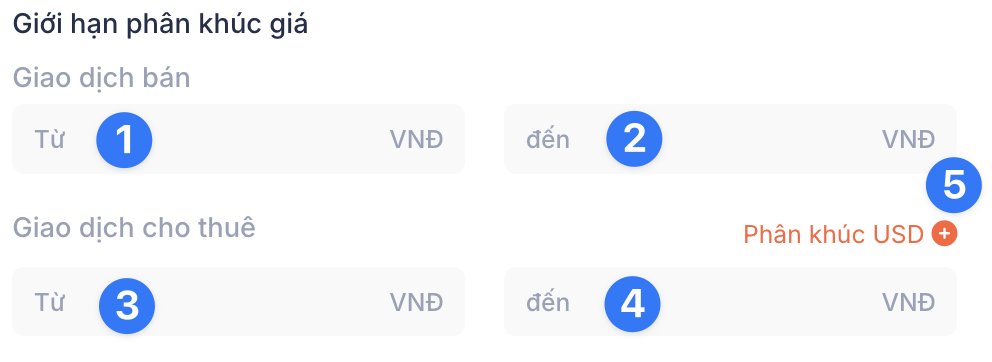

Tạo Mới Nhân Viên
Bước 2: Phân Quyền Tính năng và Truy cập
Tính năng tạo mới nhân viên sẽ bao gồm:
1. Nhập thông tin nhân viên
1.1 Thông tin chung
1.2 Thông tin liên hệ
1.3 Vị trí Chức vụ
1.4 Upload hình
2. Phân quyền tính năng/truy cập (Bạn đang ở bước này)
2.1 Thiết lập Bảo mật (chung)
2.2 Quản lý nhân viên chi nhánh
2.3 Thiết lập bảo mật
2.4 Thao tác Phân quyền
2.5 Ẩn Dashboard thống kê
2.6 Quản lý nhân viên chi nhánh
2.7 Các tính năng truy cập xem dữ liệu (quan trọng)
3. Kích hoạt tài khoản nhân viên
Định nghĩa từ thường dùng: Tab
Trên trang tạo Nhân viên mới này, sẽ có 2 Tab, hoặc có thể gọi là Thẻ.
Mục đích: Dùng để phân loại thông tin và cắt nhỏ số thông tin cần phải nhớ, đỡ bị rối.
Định nghĩa từ thường dùng: Trường
Trong ngữ cảnh nhập thông tin, Trường là tên gọi các ô nhập dữ liệu bằng chữ hoặc số.
Định nghĩa từ thường dùng: Nút Switch
Trong ngữ cảnh nhập thông tin, Nút Switch là tên gọi nút tắt/mở 1 chức năng nào đó trên form điền hoặc phần mềm.
{kind=link}
🚀 BẮT ĐẦU NHÉ
Trên Tab Phân Quyền này, chúng ta sẽ bắt đầu bằng với:
2. Thiết lập chung
2.1 Nhóm Phân quyền
{kind=link}
Nhóm Phân Quyền
Các nhóm phân quyền dưới đây đã được thiết lập sẵn để truy cập và hoạt động theo đúng chức năng của mỗi đối tượng. Tuy nhiên, Quý khách có thể chỉnh sửa các quyền truy cập trực tiếp trên trang phân quyền này theo đúng tiêu chí và định hướng của công ty của Quý khách.
| Tên trường | Mô tả |
|---|---|
| Admin Tổng | Có quyền cao nhất về: truy cập, import/export, nhân sự, tất cả các quyền khác. Và loại Admin này không thể xoá. Các nhóm phân quyền thấp hơn sẽ bị xoá hoặc thao tác bởi cấp quyền cao nhất này. |
| Chuyên viên Tư vấn | mô tả |
| Admin | mô tả |
| Hành Chính - Nhân sự | Được quyền tạo mới, cập nhật thông tin nhân sự, thông báo thông tin, văn bản nội bộ công ty. |
Trường bắt buộc điền
Tuỳ vào chính sách công ty thì một số trường nào đó sẽ phải bắt buộc điền, Một số trường theo mặc định của phần mềm sẽ không bắt buộc điền. Tuy nhiên, nếu quý khách muốn thiết lập bắt buộc cho trường nào đó, vui lòng liên hệ với bộ phận Chăm sóc khách hàng để được cập nhật sớm nhất.
2.2 Tài khoản đăng nhập
| Tên trường | Mô tả | Mặc Định |
|---|---|---|
| Cho phép đăng nhập | Cấp phép cho nhân viên đăng nhập phần mềm | Mở cho tất cả nhóm phân quyền |
| Cấp tài khoản đăng nhập | Hệ thống tự động gửi thông tin và link kích hoạt tới email đã nhập ở tab: Thông Tin | Mở cho tất cả nhóm phân quyền |
2.3 Thiết lập bảo mật
| Tên trường | Mô tả | Mặc Định |
|---|---|---|
| Xác minh dữ liệu BĐS | Cấp phép cho nhân viên đăng nhập phần mềm | Tắt cho tất cả nhóm phân quyền |
| Tạo tệp dữ liệu BĐS Công ty | Lưu nhóm bất động sản theo nhóm: Cá nhân, Công ty và Group | Tắt cho tất cả nhóm phân quyền |
| Cập nhật văn bản nội bộ | Cho quyền đăng thông tin văn bản nội bộ thuộc chi nhánh đang quản lý. | Tắt cho tất cả nhóm phân quyền |
| Hạn chế IP Truy cập | Giới hạn truy cập chỉ với địa chỉ IP đã thiết lập | Mở cho tất cả nhóm phân quyền |
| Hạn chế vị trí truy cập | Giới hạn truy cập bằng định vị của thiết bị của nhân viên, trong bán kính trong vòng 200m. | Mở cho tất cả nhóm phân quyền |
| Người dùng ẩn danh | Các thao tác và hoạt động trên phần mềm sẽ ẩn thông tin người truy cập và các nhật ký tương tác. | Tắt cho tất cả nhóm phân quyền |
Bật/Tắt bằng nút Switch
Bấm vào nút Switch của mỗi mục để thay đổi trạng thái tương ứng.
Ví dụ: Xác minh dữ liệu đang ở trạng thái mặc định Tắt, đang có màu xám, đồng nghĩa với việc đang Không cho phép Xác minh dữ liệu BĐS. Bấm vào nút Switch để chuyển thành trạng thái thành Mở, nút chuyển màu đỏ hoặc xanh lá, đồng nghĩa với việc Đang cho phép xác minh dữ liệu BĐS.
Tương tự với các thiết lập khác cũng thao tác như vậy.
Sau khi đã bật/tắt để thiết lập các nút này, bấm nút Lưu ở trên góc phải trang để Lưu/Cập nhật thông tin Nhân viên.
2.4 Thao tác Phân quyền
2.4.1 Tài sản
| Tên trường | Mô tả | Gồm các quyền |
|---|---|---|
| Thông tin BĐS | Quản lý cập nhật, tạo mới, xoá, xem hàng BĐS từ bộ lọc, dữ liệu nhập mới, phường xã mới, số nhà, kiểm tra trung, tính hoa hồng, ghi lịch sử hoạt động của nhân viên, cập nhật pháp lý sổ hồng, hình ảnh, số điện thoại, giá bán và thuê, ghi chú, ưu điểm, thẻ thông tin nổi bật, trạng thái giao dịch, cập nhật,... Quyền Xuất hoặc Nhập file thuộc về Admin tổng. Xem cách quản lý Thông tin BĐS |
Xem Tạo Sửa Xoá Xuất Nhập |
| Tệp giỏ hàng | mô tả | Xem Tạo Sửa Xoá |
| Bản đồ quy hoạch | mô tả | Xem |
| Khoá thông tin | mô tả | Xem Tạo Sửa Xoá |
| Danh bạ môi giới | mô tả | Xem Tạo Sửa Xoá |
| ID Khách hàng | mô tả | Xem Tạo Sửa Xoá |
| Bio page | mô tả | Xem Sửa |
2.4.2 Hoạt Động
| Tên trường | Mô tả | Gồm các quyền |
|---|---|---|
| Chat nội bộ | Tính năng chat nội bộ trong công ty, để bảo mật thông tin hơn. | Xem Tạo Sửa Xoá Xuất Nhập |
| Tin nội bộ | Cập nhật các tin mới nhất từ Ban giám đốc hoặc Hành chính Nhân sự Xem cách đăng tin nội bộ |
Xem Tạo Sửa Xoá |
| Công việc | Ghi chú lịch sự kiện, công việc cá nhân. | Xem |
| Báo cáo dẫn khách | Điền form mô tả sự việc sau khi dẫn khách đi xem BĐS Xem cách quản lý báo cáo dẫn khách |
Xem Tạo Sửa Xoá |
| Báo cáo tin đăng | mô tả Xem cách quản lý báo cáo tin đăng |
Xem Tạo Sửa Xoá |
| Hoạt động | Xem và quản lý các thao tác hoạt động của nhân viên trên nên tảng phần mềm. Xem cách quản lý hoạt động |
Xem Tạo Sửa Xoá |
| Vị trí | Cho phép người quản lý thu thập nhật ký định vị thiết bị của nhân viên khi đi thị trường và trong giờ làm việc. Tính năng này liên kết với nút switch Hạn chế vị trí truy cập. | Xem Sửa |
| Giao dịch | Cho phép nhân viên cập nhật trạng thái giao dịch, mặc định là Chưa xác định, còn lại là: Chưa giao dịch, Đang giao dịch,vv Xem cách cập nhật giao dịch |
Xem Sửa |
| Văn bản nội bộ | mô tả | Xem Tạo Sửa Xoá |
2.4.3 Nhân Sự
| Tên trường | Mô tả | Gồm các quyền |
|---|---|---|
| Nhân viên | Quản lý nhân viên, tạo mới, chỉnh sửa, lưu hồ sơ, xoá, cập nhật hợp đồng,... | Xem Tạo Sửa Xoá Xuất Nhập |
| Vị trí phòng ban | Cập nhật, tạo mới vị trí, chức vụ, phòng ban trong công ty. Xem cách quản lý Vị trí phòng ban |
Xem Tạo Sửa Xoá |
| Chi nhánh | Cập nhật, tạo mới thêm chi nhánh của công ty. Xem cách quản lý Vị trí phòng ban |
Xem |
2.4.4 Tuyển Dụng
| Tên trường | Mô tả | Gồm các quyền |
|---|---|---|
| Tuyển dụng | Lưu tin, tạo mẫu tuyển dụng | Xem Tạo Sửa Xoá Xuất Nhập |
| Ứng viên | Lưu, cập nhật hồ sơ của ứng viên | Xem Tạo Sửa Xoá |
2.4.3 Hệ thống
| Tên trường | Mô tả | Gồm các quyền |
|---|---|---|
| Cấp phép IP | Cập nhật địa chỉ IP, cho phép nhân viên hoạt động phần mềm trên địa chỉ đã cho phép, ví dụ như địa chỉ IP tại công ty. Địa chỉ IP căn bản được cấu hình tối ưu cho địa chỉ IP tĩnh. Tuy nhiên, thông thường các nhà mạng ban đầu sẽ cấu hình địa chỉ IP động cho khách hàng. Quý khách cần lưu ý liên hệ với nhà mạng để đăng ký địa chỉ IP tĩnh để sử dụng phần mềm ổn định. Xem cách quản lý Cấp phép IP |
Xem Tạo Sửa Xoá Xuất Nhập |
| Cấp phép thiết bị | Mỗi thiết bị truy cập sẽ được gán 1 mã thiết bị và hệ thống ghi lại lịch sử truy cập của mã thiết bị này, và không thể thay đổi mã này. Người ở cấp quản lý có thể cho phép hoặc không cho phép thiết bị này truy cập và hoạt động trên phần mềm. | Xem Tạo Sửa Xoá |
| Mẫu hợp đồng | Tạo và quản lý mẫu hợp đồng gửi khách. | Xem |
| Thư mục data BĐS | Tạo và quản lý các loại danh mục BĐS để thao tác trên tính năng Thông tin BĐS, ví dụ như: loại BĐS, loại tài sản, ưu điểm, nhược điểm, loại đất, trạng thái, vai trò, tình trạng pháp lý... Xem cách quản lý Thư mục BĐS |
Xem Tạo Sửa Xoá |
| Dữ liệu đường | Cho phép cập nhật, thêm mới, sửa, xoá tên đường hiện có trên phần mềm. Xem cách quản lý Dữ liệu đường |
Xem Tạo Sửa Xoá |
| Khung giá đất | Nhân viên công ty được xem có khung giá được cập nhật mới nhất và thường xuyên từ nhà cung cấp phần mềm. | Xem Tạo Sửa Xoá |
| Log thao tác | Lịch sử thao tác, hoạt động trên phần mềm của từng user trên hệ thống phần mềm. | Xem Sửa |
| Thiết lập chung | Cập nhật chỉnh sửa 1 số thiết lập cấu hình chung cho công ty, ví dụ, bán kính truy cập theo vị trí, Cho phép cập nhật dữ liệu theo Tỉnh/Thành phố, Email CSKH, Địa chỉ công ty, Tên Công ty, Số Điện thoại. Xem cách Thiết lập chung |
Xem Sửa |
| Gói lưu trữ | Cho xem thông tin dung lượng lưu trữ trên hệ thống phần mềm. Các loại thông tin được lưu trữ: Tài liệu (PDF), Hình ảnh/Video về nhà, bđs,... Xem cách theo dõi dung lượng lưu trữ |
Xem Tạo Sửa Xoá |
Định nghĩa từ thường dùng: IP tĩnh vs IP động
Trong môi trường Internet, mỗi khi đăng ký gói cước truy cập Internet từ các nhà mạng, họ sẽ cung cấp địa chỉ IP động cho khách hàng.
ví dụ về địa chỉ IP: 172.15.24.32
IP Động là gì, tại sao?
- con số địa chỉ IP trên sẽ tự động thay đổi theo từng chu kỳ của mỗi nhà mạng, có thể 1 ngày, 2 ngày, hoặc 7 ngày. Việc thay đổi này do hệ thống quản lý IP nhà mạng tự động đổi để làm mới trạng thái truy cập và bảo mật thông tin IP hơn để không phải bị theo dõi thường xuyên.
IP Tĩnh là gì, tại sao?
- con số địa chỉ IP trên sẽ không tự động thay đổi theo theo chu kỳ cho đến khi thông báo thay đổi với nhà mạng. Việc này đòi hỏi tính bảo mật cao hơn và quản lý nhiều hơn, do đó khách hàng phải trả phí quản lý này để nhà mạng duy trì.
2.5 Ẩn Dashboard thống kê
| Tên trường | Mô tả | Trạng thái mặc định |
|---|---|---|
| Hoạt động nhân viên | Thống kê các hoạt động, số lượng, thời gian của nhân viên trên phần mềm. | Chưa bật |
| Số lượng thông tin | Thống kê và phân loại số lượng thông tin đã nhập trên phần mềm. | Chưa bật |
| Lượt xem thông tin | Thống kê số lượt xem thông tin theo tiêu chí địa điểm (quận, huyện, thành phố), loại bđs, loại giá, bán/thuê... | Chưa bật |
| Trạng thái nhà | Thống kê số lượng thông tin dựa theo trạng thái nhà: chủ nhà cũ, hiện tại, chưa giao dịch, đã giao dịch... | Chưa bật |
| Thống kê quận huyện | Thống kê thông tin theo tiêu chí phân bố quận huyện (TPHCM) | Chưa bật |
| Trạng thái giao dịch | Thống kê các trạng thái giao dịch. | Chưa bật |
Cách thao tác
Nút bấm thao tác chọn
Xem 2 hình bên dưới.
Hình bên trái: Đối với loại nút bấm viền tròn trên hệ thống phần mềm, loại nút này mặc định khi có màu xám có nghĩa là chưa kích hoạt tính năng.
Hình bên phải: Khi nút bấm này được click, sẽ chuyển màu cam/hoặc màu chủ đạo của công ty (xanh lá, xanh lam, đỏ,...) thì có nghĩa là chức năng này được kích hoạt.
Chức năng của nút này tương tự như nút Switch.
Quý khách có thể gặp nút bấm này trên các bộ lọc thông tin BĐS, quản lý nhân viên, cấp quyền nhân viên,...
{kind=link}
{kind=link}
2.6 Quản lý nhân viên chi nhánh
Thiết lập cấu hình để nhân viên mới này có thể thấy các hoạt động của những nhân viên khác cùng chi nhánh, hoặc tất cả chi nhánh.
2.7 Xem Dữ liệu
Đây là phần quan trọng, đơn vị phần mềm có tham khảo và đã thiết lập sẵn 1 số cấu hình trong tính năng này. Quý khách hàng lưu ý và tuỳ chỉnh tuỳ theo nhu cầu và policy của công ty.
2.7.1 Giới hạn ngày tháng
Sau đây là hình Giao diện cho xem thông tin BĐS theo khoảng ngày tháng. Từ ngày/tháng/năm (đánh dấu số 1 trên hình) -> Đên ngày/tháng/năm (đánh dấu số 2 trên hình).
{kind=link}
• Nếu trường số 1 để trống, mặc định là không giới hạn, hiển thị tất cả thông tin BĐS trước ngày cấu hình trên trường số 2.
• Nếu trường số 2 để trống, mặc định là ngày hiện tại (hôm nay).
2.7.2 Loại giao dịch được xem
Sau đây là hình Giao diện cho xem loại giao dịch BĐS theo khoảng ngày tháng.
• Cho xem tất cả (đánh dấu số 1 trên hình).
• Cho xem giao dịch Bán (đánh dấu số 2 trên hình).
• Cho xem giao dịch Thuê (đánh dấu số 3 trên hình).
{kind=link}
Nút radio
Như hình trên thể hiện loại nút radio, dùng để bật tắt tính năng, có giao diện là 1 ô tròn.
• ở trạng thái mặc định có màu xám, có nghĩa là chưa kích hoạt.
• khi click vào, nút chuyển màu (đỏ, xanh hoặc màu chủ đạo trên phần mềm) có nghĩa là đã kích hoạt.
2.7.3 Giới hạn lượt xem mỗi ngày
Sau đây là hình Giao diện cấu hình lượt xem thông tin BĐS trong 1 ngày, theo các tiêu chí sau:
• Lượt xem thông tin (đánh dấu số 1 trên hình).
• Lượt xem số điện thoại (click để hiện số điện thoại khi xem thông tin BĐS) (đánh dấu số 2 trên hình).
• Giới hạn số lượt xem Số Điện thoại chênh lệch, nghĩa là 1 khoảng lượt được xem thêm khi vượt quá, trường này cho phép user/nhân viên xem thêm số lượt được cấu hình ở đây. Ví dụ: Nếu số lượt xem Số điện thoại là 20, và trường này cấu hình lượt xem chênh lệch là 5, tổng số lượt xem là 25 mỗi ngày. (đánh dấu số 3 trên hình).
{kind=link}
2.7.4 Giới hạn Phân khúc giá
Sau đây là hình Giao diện cấu hình phân khúc, khoảng giá bán và khoảng giá thuê, cụ thể theo các tiêu chí sau:

• Giới hạn cho nhân viên xem thông tin BĐS trong khoảng giá (phân khúc giá) bán: (đánh dấu số 1 và số 2), nhập số thấp nhất (trường số 1) và cao nhất (trường số 2) trong khoảng giá mong muốn.
• Giới hạn cho nhân viên xem thông tin BĐS trong khoảng giá (phân khúc giá) thuê: (đánh dấu số 3 và số 4), nhập số thấp nhất (trường số 13) và cao nhất (trường số 4) trong khoảng giá mong muốn.
• Nếu Quý khách muốn điền phân khúc giá thuê với đơn vị là USD, bấm vào nút số 5. Sẽ hiện theo hình dưới đây.
{kind=link}
{kind=link}
2.7.5 Tắt/Mở Xem hình/Lịch Sử/Số Điện Thoại
Sau đây là hình Giao diện tăt/mở cho phép xem hình, số nhà, lịch sử, người cập nhật cụ thể theo các tiêu chí sau:
{kind=link}
| Tên trường | Mô tả | Trạng thái mặc định |
|---|---|---|
| Xem số nhà | Cho xem đầy đủ số nhà | Chưa bật |
| Xem hình/video nhà | Cho xem hình và video thông tin sản phẩm BĐS đã cập nhật trên phần mềm | Mở |
| Xem hình sổ | Cho xem hình các loại sổ nhà đất, như sổ hồng. | Mở |
| Xem người cập nhật | Hiển thị tên và hình người cập nhật trên sản phẩm thông tin BĐS | Mở |
| Xem số điện thoại | Cho phép xem số điện thoại liên hệ. Tính năng này liên kết với Giới hạn lượt xem mỗi ngày đã đề cập ở bên trên. | Mở |
| Xem lịch sử tương tác | Cho xem lịch sử tương tác | Mở |
| Xem lịch sử cập nhật | Cho xem lịch sử nhân viên và ngày tháng, giờ cập nhật. | Mở |
| Xem lịch sử dẫn khách | Cho xem lịch sử dẫn khách, tính năng này liên kết với tính năng Báo cáo dẫn khách | Mở |
2.7.6 Quận Huyện & Trạng thái BĐS Không được xem
Sau đây là hình Giao diện tăt/mở cho phép xem hình, số nhà, lịch sử, người cập nhật cụ thể theo các tiêu chí sau:
{kind=link}
Với Giao diện hiện tại, Quý khách vui lòng bấm vào vùng chữ hoặc dấu mũi tên xuống. Ví dụ Quận/Huyện không được xem, click vào để hiện giao diện chọn (nhiều) các danh mục/lựa chọn theo mong muốn của quý khách.
{kind=link}
Nút thao tác chọn
Như đã giới thiệu ở trên, Nút Thao tác chọn cho phép chọn nhiều danh mục/option cùng lúc.
Success
Sau khi đã chọn lựa và cấu hình các thiết lập cần thiết cho đối tượng nhân viên mới này, Quý khách có thể bấm nút Lưu. Hệ thống sau đó sẽ tự động gửi link và thông tin kích hoạt đến email của nhân viên đã nhập trước đó trong tab Thông tin.
2. Bước tiếp theo để hoàn tất quá trình tạo Nhân viên
- Bước 3
Hướng dẫn Kích hoạt Nhân viên
→ Xem hướng dẫn